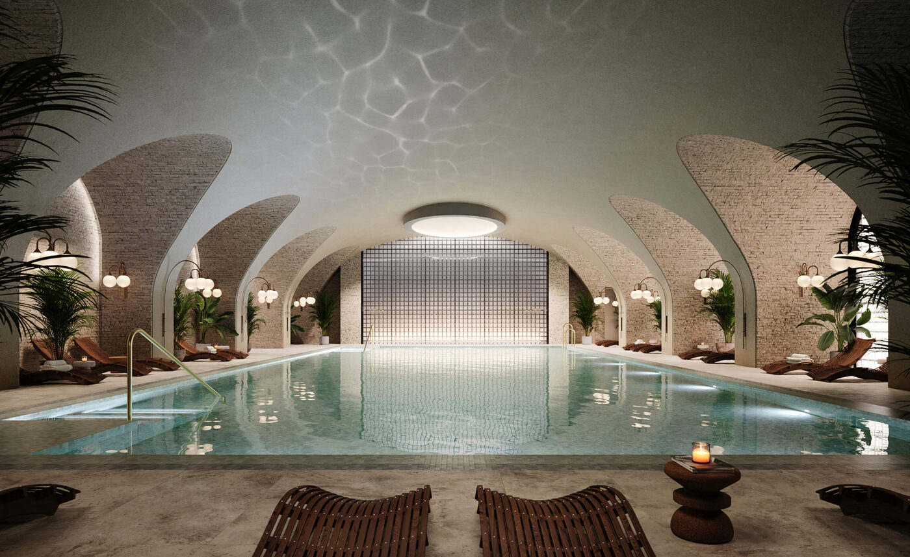

There is a particular kind of ambition required to open a wellness hotel in a building that spent over a century selling department-store glamour to Londoners. Six Senses London, which welcomed its first guests on 1 March 2026 inside The Whiteley in Bayswater, is that ambition made tangible — a 109-room hotel, spa and private members’ club set within one of the city’s most storied retail buildings, restored to something finer than it ever was.
The Whiteley has a biography worth knowing. William Whiteley opened his first drapery shop on Westbourne Grove in 1863 and spent the next four decades expanding it into what he boldly called “the Universal Provider” — a department store that claimed to supply anything from a pin to an elephant. The building that stands today, a Grade II-listed Edwardian baroque landmark on Queensway, dates from a 1911 reconstruction and has been empty since the shopping centre that occupied it closed in 2018. Its rescue has been one of London’s most closely watched heritage projects.
That rescue was entrusted to Foster + Partners and EPR Architects, who have preserved the original façade and the soaring domed roof while inserting a contemporary structure within. The approach is surgical rather than theatrical: existing stonework and ironwork have been meticulously cleaned and repaired, while new glazing and circulation spaces defer to the building’s Victorian and Edwardian proportions without attempting to imitate them. The result is a building that reads as simultaneously old and unmistakably new — the kind of architectural layering that London does better than almost any other city when it chooses to.
The rooms: terra-cotta, marble and private terraces
Interiors are by AvroKO, the New York-based studio whose portfolio includes some of the most design-literate hotel projects of the past decade. At The Whiteley, AvroKO has developed a palette rooted in terra-cotta and deep blue — warm, grounding tones that reference both the building’s brick heritage and the wellness philosophy that Six Senses brings to everything it touches. Rooms feature glass-encased rainfall showers, marble bathrooms with heated floors, and the kind of understated material richness that reveals itself slowly: hand-thrown ceramics on the shelving, linen curtains that filter Bayswater’s afternoon light, oak joinery with visible grain.
The 109 rooms and suites range from Premier rooms to the flagship Whiteley Suite, with Junior Corner Terrace Suites and Notting Hill Suites filling the middle ground. Several categories include private terraces overlooking Queensway or, from higher floors, Hyde Park. Rates begin at £850 per night — approximately $1,150 — positioning Six Senses at the upper end of London’s luxury market but some distance below the stratospheric tariffs charged by the city’s palace hotels. The value proposition is clear: this is a hotel that invests in substance rather than ostentation.
Alongside the hotel, fourteen branded residences offer one- and two-bedroom apartments, duplexes and penthouses for those who prefer the permanence of ownership with the services of a Six Senses address. They share the same AvroKO aesthetic and have access to every hotel amenity, from housekeeping to the spa.
A department store that once promised to supply anything from a pin to an elephant has become a hotel that promises something rarer still — the permission to slow down in a city that never does.
The Splendid EditThe spa: London’s most considered wellness floor
If the rooms are the reason to book, the spa is the reason to return. Spanning nearly 24,800 square feet across a single floor, it is among the largest urban hotel spas in Europe and almost certainly the most thoughtfully programmed in London. The centrepiece is an indoor swimming pool designed by AvroKO in the same terra-cotta and blue palette as the rooms — a serene, light-filled space that feels more Mediterranean bathhouse than basement leisure centre.
Six Senses has introduced London’s first magnesium pool here, a feature borrowed from the brand’s Asian and Middle Eastern properties where mineral-rich bathing is central to the wellness offering. A floatation room provides sensory-deprivation sessions, while the biohacking recovery lounge offers cryotherapy, infrared sauna and compression therapy — the clinical end of the wellness spectrum, delivered with the kind of warm, unhurried service that prevents it from feeling like a medical appointment.

The pool at Six Senses London — Photography courtesy of Wallpaper*
The treatment menu draws on a partnership with De Mamiel, the London-based skincare house founded by Annee de Mamiel, whose lymphatic drainage protocols have a devoted following among those who take their wellness seriously. Treatments are long — ninety minutes is standard — and personalised after an initial consultation that feels genuinely diagnostic rather than performative.
Perhaps the most distinctive space is the Alchemy Bar, a modern apothecary where guests blend their own tinctures, teas and aromatherapy oils from a library of British-grown herbs and botanicals. It is wellness at its most tactile and least austere — you leave with something you made yourself, which turns out to be a more effective souvenir than any branded candle.
The table: Whiteley’s Kitchen and the green bar
Dining is overseen by executive chef Eliano Crespi, whose Whiteley’s Kitchen, Bar and Café occupies a generous ground-floor space that opens onto Queensway. The cooking is vegetable-forward and broadly British in its sourcing, though Crespi’s Italian heritage surfaces in the confidence with which he handles simplicity: a roasted celeriac with hazelnut and truffle; a heritage tomato salad that relies entirely on the quality of its ingredients; handmade pasta that appears on the menu without apology alongside the English dishes.
The bar is built around a striking green marble counter — a deliberate counterpoint to the neutral tones elsewhere — and serves seasonal cocktails alongside a considered natural-wine list. Homemade ice cream, produced on site in flavours that rotate with the seasons, has already become one of those small details that guests mention before they mention the rooms. It is the kind of touch that signals a kitchen run by someone who cares about pleasure as much as provenance.
The building: a neighbourhood, not just a hotel
Six Senses occupies only part of The Whiteley. The wider development includes 139 private apartments, twenty new shops, cafés and restaurants, a cinema, a gymnasium, and padel and tennis courts — transforming an empty building into what amounts to a small neighbourhood. The ambition, clearly, is for The Whiteley to function as a destination rather than a dormitory, drawing Londoners as well as hotel guests into a building that was always intended to be public.
Central to this strategy is Six Senses Place, the brand’s first private members’ club, which launches in London as a prototype for a concept Six Senses intends to roll out globally. Members gain access to co-working spaces, a curated arts programme, childcare facilities and the spa — a package designed to attract the kind of affluent, wellness-literate Londoner who currently splits their loyalty between a Soho House membership and a boutique gym. Whether Six Senses can compete in London’s ferociously crowded members’-club market remains to be seen, but the proposition is distinctive: this is a club built around wellbeing rather than social currency.
There is also a community dimension that feels genuine rather than grafted on. The arts programme brings rotating exhibitions and talks into the public spaces; the co-working areas are designed to function as a proper workspace rather than an Instagram backdrop; and the childcare offering acknowledges a truth that most luxury hotels prefer to ignore, which is that many of their guests have children and would like somewhere considered to leave them.
What Six Senses has achieved at The Whiteley is, in the end, a question of tone. This is wellness without the austerity, luxury without the performance, heritage without the nostalgia. The building’s history as a place that promised to provide everything has been reimagined as a place that provides the one thing London’s wealthiest residents and visitors increasingly seek — the permission to stop, breathe and be looked after, in a building that has been looking after people, in one form or another, for more than a century.